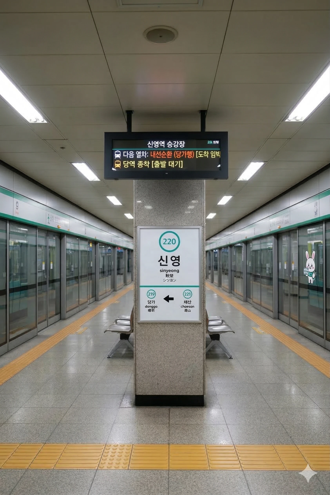

효빈 도시철도 2호선 220번 역이다. 효빈광역시 북구 신영동 412에 소재한다. 샤이니한 영광을 누리고 싶다면 이곳으로 오라.
1989년 개통된 지하 3층 규모의 역사다. 북구 신영동의 중심부에 위치하고 있으며, 인근에 대규모 산업 단지 및 배후 주거지가 형성되어 있어 출퇴근 시간대 이용객이 상당히 많은 편이다. 역명인 신영(新榮)은 '새롭게 번영한다'는 뜻을 담고 있으며, 실제로 80년대 후반 신단업중심단지가 조성되면서 급격히 발전한 지역이다.
|
2
신영역 출구 정보
|
||
|---|---|---|
| 번호 | 주요 시설 및 방향 | 비고 |
| 1 | 신영신단업중심단지 | 산업단지 직결 |
연도별 일평균 승하차 인원 통계다. 산업단지 근로자들의 꾸준한 수요로 인해 안정적인 이용객 수를 유지하고 있다.
| 신영역 이용객 통계 | ||
|---|---|---|
| 연도 | 일평균 이용객 | 비고 |
| 2020년 | 4,189명 | |
| 2021년 | 4,364명 | |
| 2022년 | 4,545명 | |
| 2023년 | 4,735명 | |
| 2024년 | 4,932명 | |

| 당가 ↑ | ||||
| 하행 (내선) | ㅣ | ㅣ | 상행 (외선) | |
| ↓ 채산 | ||||
| 상행 (외선) | 2 효빈 도시철도 2호선 (완행/출근 급행) | 외선순환 시로 · 우전 · 신흥 방면 (출근 시간대 급행 정차) |
| 하행 (내선) | 2 효빈 도시철도 2호선 (완행/출근 급행) | 내선순환 중수 · 시청 · 효빈대학교 · 중앙로 방면 (출근 시간대 급행 정차) |
| 구분 | 정류소명 | 노선 번호 |
|---|---|---|
| 순방향 | 신영역 | 25, 522 |
| 역방향 | 신영역(건너편) | 52, 252 |